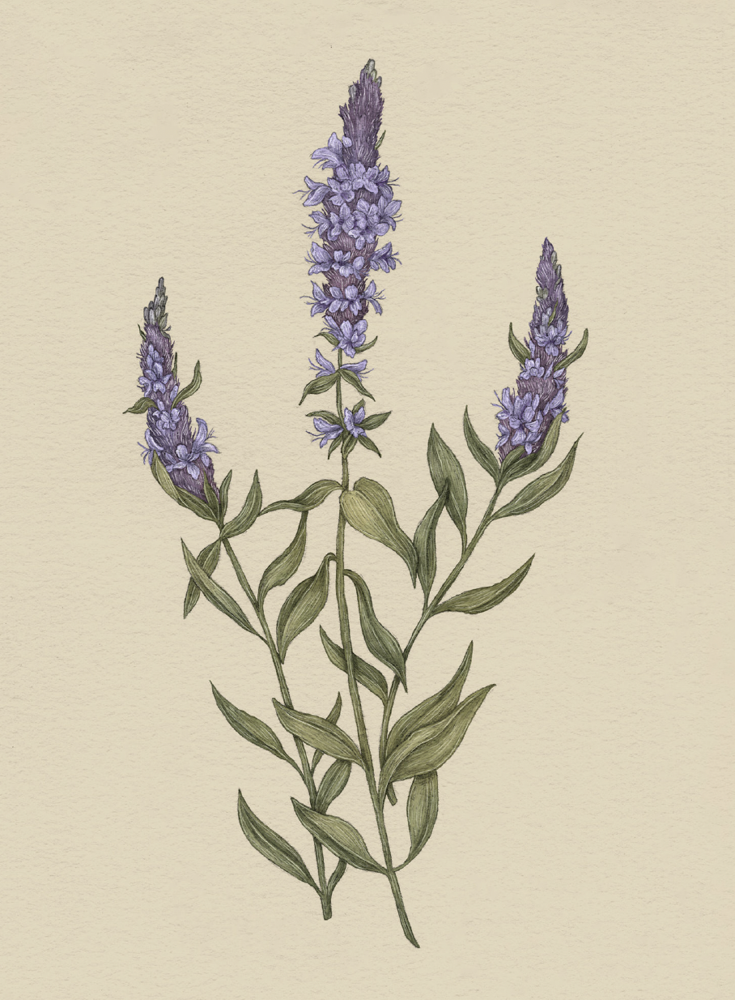

The Language of Flowers
Hyssop

Hyssop
Hyssopus
Meaning
Cleanliness
Origin
The meaning behind hyssop can be traced to ancient Greece, where the flower was used to clean and
purify temples. In biblical times, the plant was even used to treat leprosy. Its cleansing aroma is a
welcome addition in bouquets representing a new beginning.
Pair With
- Lily and Queen Anne's lace when housesitting to show you'll keep things clean and tidy
- Jasmine to honor a friend for their cheerful and virtuous heart